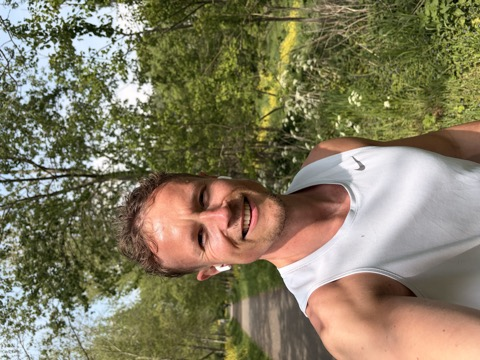

GRATIS E-BOOK VOOR RECREATIEVE LOPERS
Jouw eerste 10 KM
7 simpele keuzes voor meer vertrouwen, een betere basis en minder trainingsgedoe.
Een persoonlijk en praktisch e-book van Bart de Vries. Geen ingewikkelde theorie, maar uitleg waarmee je vandaag al slimmer kunt trainen.
Download het gratis e-bookPDF · 12 pagina's · direct beschikbaar✓ Geen account ✓ Geen telefoonnummer ✓ Meteen downloaden
 bartlopenRUN COACH
bartlopenRUN COACH
Jouw eerste
10 KM
7 simpele keuzes voor meer vertrouwen, een betere basis en minder trainingsgedoe.

DOOR BART DE VRIES12
PAGINA'S
PAGINA'S
DIT GA JE LEREN
Geen snelle truc.
Wel een betere basis.
Je krijgt precies de uitleg die ik een beginnende 10 km-loper zelf zou willen meegeven.
Persoonlijk geschreven.
Gewoon door Bart.
Gewoon door Bart.
WIE IS BART?
Snelle loper.
Rustige coach.
Ik ben Bart de Vries: meester van de bovenbouw, fanatiek hardloper en maker van persoonlijke hardloopapps. Ik help recreatieve lopers graag met duidelijkheid, motivatie en een plan dat ook naast een druk leven werkt.
Mijn eigen tijden laten zien dat ik gek ben op trainen. Mijn manier van coachen draait juist om jouw tempo en jouw doel.
19:115 KM
1:31:11HALVE MARATHON
3:18:09MARATHON
Volg @bartlopen op TikTok ↗
JOUW VOLGENDE STAP
Begin met lezen.
Ga daarna lekker lopen.
Download het e-book gratis en kies één tip die je deze week meteen gaat toepassen.
Ja, stuur mij naar de downloadGratis PDF · direct beschikbaar